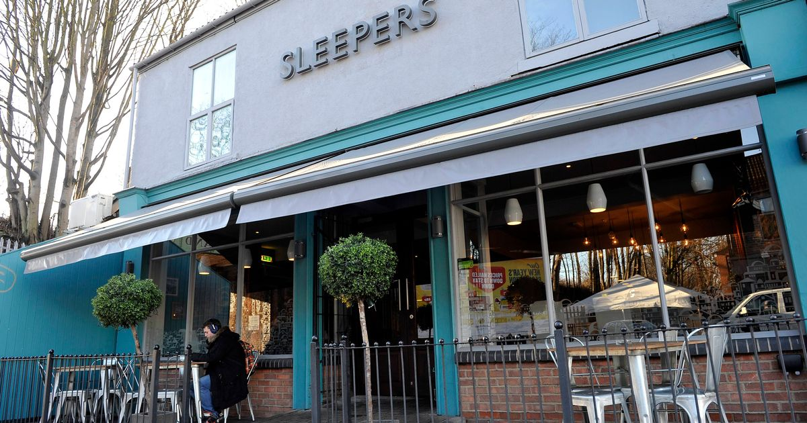

Student
Eats



Hull is a city bursting with creative restaurants, bars and fabulous food markets. From fine dining to top-notch fish and chips, there is plenty to discover.
The University and surrounding area is home to a wealth of award-winning restaurant and pub cuisine. Local chefs have access to great quality produce delivered by our farmers and fishermen all the year round.
Looking at Newland Avenue, The City Center and University Campus, we will provide you with the best locations to grab a bowl on ramen or even the famous English breakfast.
Follow our links to find the hottest and cheapest student restaurants to grab a bite to eat